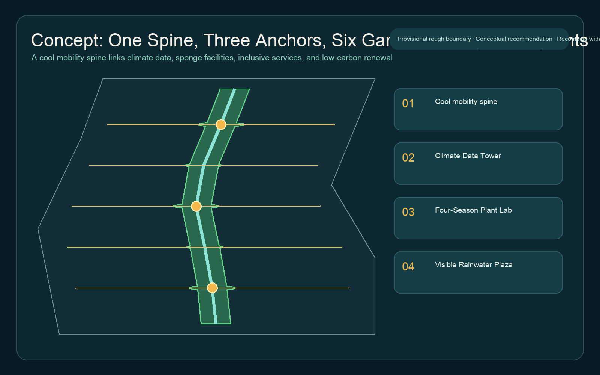
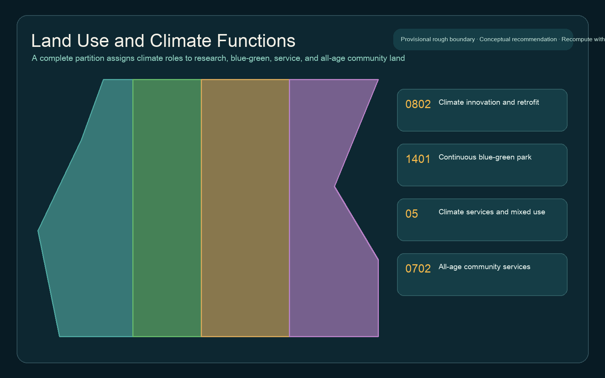
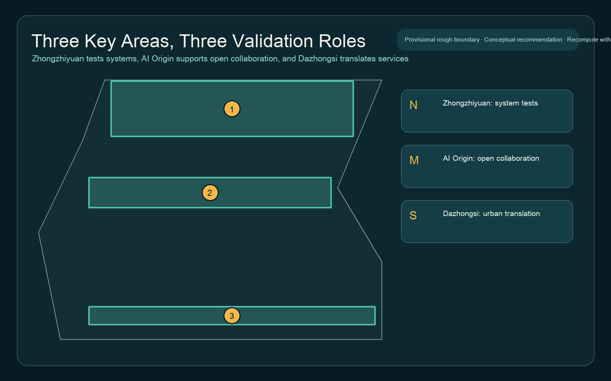
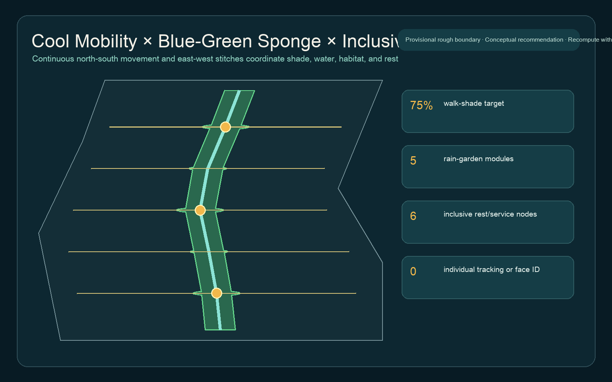
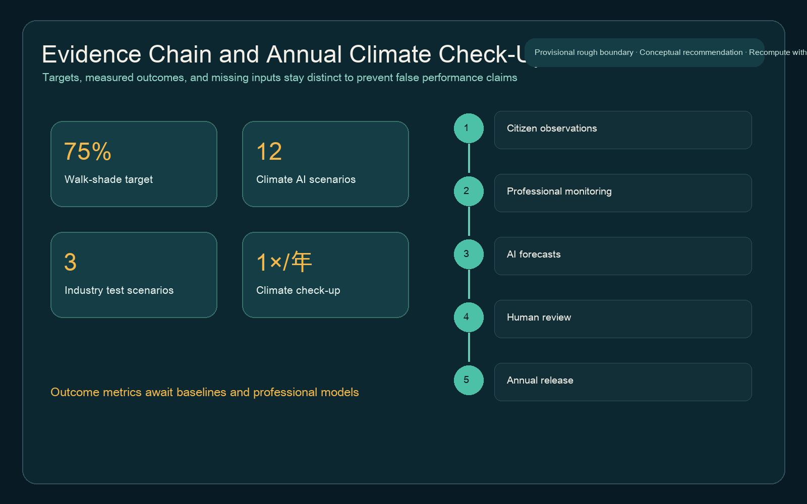

Overview Map and Three-Level Scope

The Coordinated Research Area frames the ecosystem, the Overall Design Area organizes the cool spine, and the three Key-Area Detailed Design Areas take on distinct validation roles.
Land Use, Buildings, and Renewal Projects

Climate innovation and renewal
Retain first and diagnose performance first; DRR decisions await surveys, ownership, and controls.
Continuous blue-green park
Canopy, rain gardens, and habitat stepping stones form continuous public infrastructure.
All-age community services
Rest, drinking water, toilets, human help, and offline wayfinding provide accessible fallbacks.
Key Areas

Walking, Cycling, and Blue-Green Public Space

AI-Enabled Scenarios
Urban heat monitoring
Fixed sensors and mobile transects flag anomalies; professionals interpret them.
Shade-aware routing
Explainable routes combine canopy, rest, slope, and crossings, with offline wayfinding.
Sponge-facility maintenance
Rain, ponding, and inspections generate work-order suggestions without autonomous closure.
Tree-health recognition
Imagery supports triage only; arborists review diagnoses and false positives.
Public-building energy coordination
Authorized aggregate meter and weather data identify anomalies; owners retain control.
Biodiversity observation
Citizen records complement professional plots; sensitive species locations are delayed or blurred.
Heavy-rain safety guidance
Routing uses approved emergency information and never replaces official warnings.
All-age access audit
Older adults, children, carers, and wheelchair users audit shade, seating, and barriers.
Low-carbon retrofit diagnostics
Envelope, equipment, and schedules are separated; retrofit precedes expansion.
Event carbon budget
Climate Week reports transport, energy, waste, and estimation boundaries without claiming certification.
Citizen-observation verification
Personal data is removed and samples are reviewed before entering annual trends.
Open climate sandbox
De-identified samples, benchmarks, and exit rules support pilots without procurement commitments.
Core Metrics
Area calculated from provisional geometry; not an official area claim
Design green-space ratio
Public-space ratio of three climate landmarks
Priority walking-route shade target, not a measured existing value

Task Coverage and Self-Check State
The compliance matrix covers 23 requirements across Sections 1.3, 1.4, 1.5 and agent.1-agent.6. Formal status is determined by self_check.json and trusted CI reruns.
Sources and Assumptions
| Type | Status | Use boundary |
|---|---|---|
| Official announcement and standards | Usable for tasks and principles | Cannot replace official site boundaries or controls |
| Provisional geometry | provisional_only | Generation, presentation, and intake checks only |
| Climate outcome metrics | Pending baseline | Heat, water, energy, biodiversity, and accessibility require professional data |